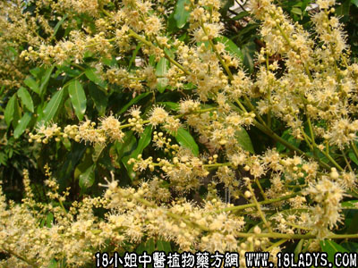

别名：龙眼菌。本品是植物无患子科，龙眼树之寄生菌。
生长环境：本品为常绿乔木。是栽培的果树，多在村庄及屋宅栽种。
分布：我国中部及东部，尤以福建、广东最多，最普遍。此外越南、印度亦有。
采集期：全年。
自采地点：家种。
性味：性平、味淡。
功能：化气、止咳。
主治、用量和用法：1、痰火咳嗽：干用5钱至1两，猪瘦肉适量，清水煎服；2、胃痛：用法同上；3、疝气：用法同上。
附录：（龙眼叶）1、治产后口渴，以陈久者佳，炒透煎作茶饮，有补血作用，常人亦用作茶叶；2、治小儿烂头胎毒风瘼：干用适量，煎水外洗。
（龙眼核）止血：为末，干用，配伍用。
（龙眼树皮）治内伤咳、撞红苏劳，配伍用。
验方：（治内伤咳、撞红苏劳方）龙眼树皮、榕树须、入地金牛、三念寄生、木棉根各5钱、清水四碗，煎成一碗服。
（方解）本方五药均能散瘀，龙眼树皮、入地金牛又能化气理肺，榕树须、三念寄生又可退潮热，木棉根滑大肠、除结热，为下夺之用。合为清热理气、散瘀，攻而不峻之剂，虚者亦可用。
（方歌）伤咳撞红与苏劳，龙眼树皮榕树须，入地金牛三念寄，木棉根入力更高。
（龙眼寄生）治内伤咳血：干用1～2两，猪瘦肉适量，清水煎服。
本文解释权归中药大全，本文地址：https://www.daquan.com/post/1586.html